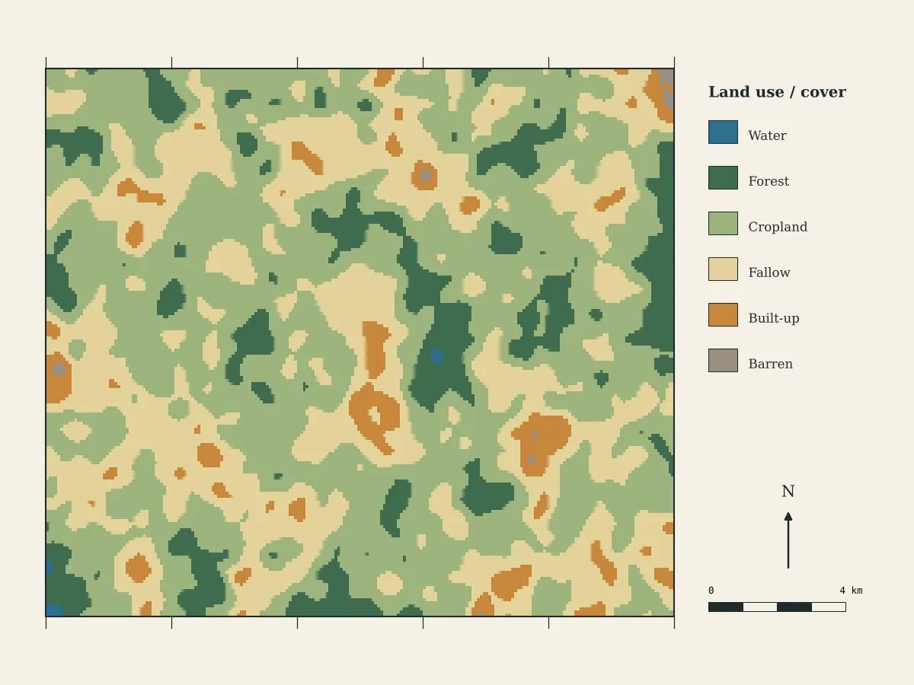

Research & Project Maps
Per map
Individual maps for a paper, thesis, report or presentation.
Order thisTerrastory Research
28.54°N 77.19°E New Delhi
Study area maps, land use / land cover, NDVI, change detection and thematic maps, made with the same remote sensing and GIS methods used in published research.

28.54°N 77.19°E New Delhi
Clear inset maps that place your site in its district, state and country.
Classified maps from satellite imagery, with accuracy noted where relevant.
Green cover and vegetation health across seasons or years.
What changed between two or more dates, mapped and measured.
Elevation, slope, watersheds and drainage networks.
Sampling points, field results and interpolated surfaces.
26.45°N 80.33°E Kanpur
Every map is built to pass a careful reviewer.
26.45°N 80.33°E Kanpur
Founding offer 30% off for our first clients
Per map
Individual maps for a paper, thesis, report or presentation.
Order thisSeveral maps, one style
A consistent set of maps for a thesis chapter, report or EIA.
Order this19.08°N 72.88°E Mumbai
Study area, the maps you need, your data and any journal guidelines.
We confirm the maps, data sources, price and deadline.
You get drafts to check. Two rounds of changes are included.
Publication-ready files and the methods note, after payment.
22.57°N 88.36°E Kolkata
Both are possible. We can design maps from your results, or prepare standard layers such as land use, NDVI or change detection from satellite data. The research question and interpretation stay yours.
Yes. Every analysis map comes with a short methods note: data sources, dates, resolution and processing steps, so you can cite and reproduce it.
Yes. Send the guidelines and we'll match size, resolution, fonts and file type.
Two rounds of revisions are included. Larger changes after review can be quoted separately.
Yes. Field points, lab results, survey data or shapefiles can all be mapped. Your data is never shared or reused.
Tell us your study area and the maps you need.